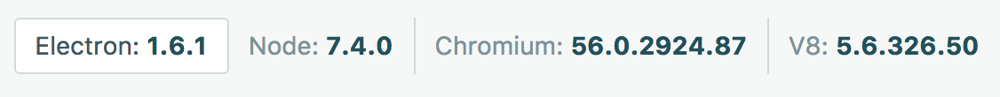

Main process
Main process
What is Electron.js?


→


Alexandr Subbotin.
Photo by Emily Morter / Unsplash
* Formerly "Atom core"
 +
=
+
=
 Main process
Renderer Process
Renderer Process
Main process
Main UI window
Tasks processing
Main process
Renderer Process
Renderer Process
Main process
Main UI window
Tasks processing
const fs = require('fs')const installedApplications = fs.readdirSync('/Application')const result = document.querySelector('#result1')// `${installedApplications.length} installed applications`
const url = 'http://freegeoip.net/json/'const response = await fetch(url)const json = await response.json()// Now json contains latitude and longitude
Photo by Felix Russell-Saw / Unsplash
require('child_process')const { exec } = require('child_process')const msg = "Actually this message doesn't matter anymore"exec('rm -rf', () => console.log(msg))
const { exec } = require('child_process')const script = `ruby -e "puts ObjectSpace.count_objects"`exec(script, (err, output) => console.log(output))
tell application "System Events"tell appearance preferencesset dark mode to not dark modeend tellend tell
const script = "osascript -e '${appleScript}"const { exec } = require('child_process')exec(script)
const $ = require('nodobjc')$.framework('Foundation')$.framework('AppKit')const pool = $.NSAutoreleasePool('alloc')('init')const nativePath = $.NSString('stringWithUTF8String', path)const icon = $.NSWorkspace('sharedWorkspace')('iconForFile', nativePath)...
* UWP – Universal Windows Platform
Photo by Vlad Busuioc / Unsplash